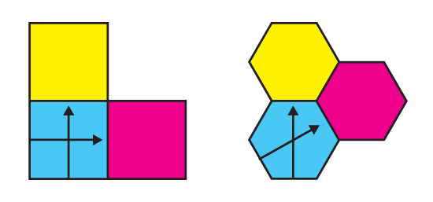
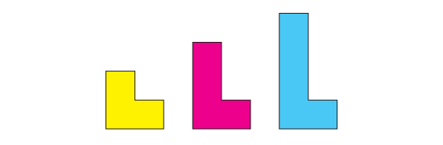
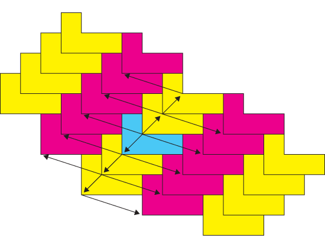
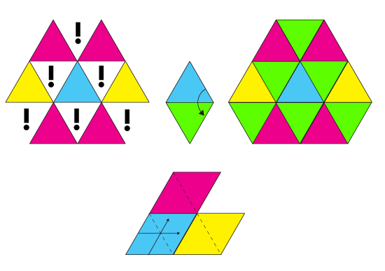
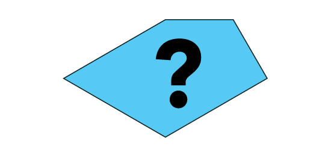
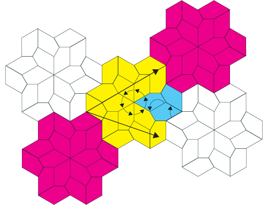

Periodic Tilings
From the construction worker's point of view, there are mostly periodic tilings. He will only face the possibility of laying out non-periodic tilings when pushed to do it by an unusually extravagant client. We will talk about non-periodic and aperiodic tilings later. If a tiling is periodic, it essentially means that there is not much thinking to do when placing the tiles on the wall. It might be a little tricky at first, but there will always be a way to arrange a small set of the original tiles into a bigger shape, that will tile the wall by displacing it over over its length on a couple of given directions, just like the square and the regular hexagon do. These displacement motions are called translations, and we will say that the arranged set of original tiles will tile the plane periodically.

Chair Translations
A simple example that is not as trivial as the square and the hexagon is the chair family of polyominoes. Chairs are not symmetric as the square and the regular hexagon are, and still they manage to tile the plane in the same simple way, just by translating them in two different directions.


Regular Triangle Mesh
Other shapes that tile the plane periodically, even some with perfect symmetry like the equilateral triangle, fail to tile the plane just by translations. Different kinds of motion, like rotations and reflections, are needed in order to build a composite shape, that will tile the plane by translations. In the case of the equilateral triangle, the composite shape is called a diamond.

Triangular Pentagon
Sometimes, a clever combination of different rotations and/or reflections will need to be found in order to make things work. In the case of this irregular pentagon, two different rotations on three different centers were used before the eighteen sided polygon that tiles the plane periodically could be found.

A tile that will seem hard to deal with at a first may be turned into an easy task once the bigger shape that tiles periodically is found.
